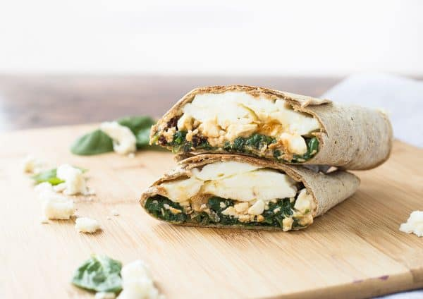
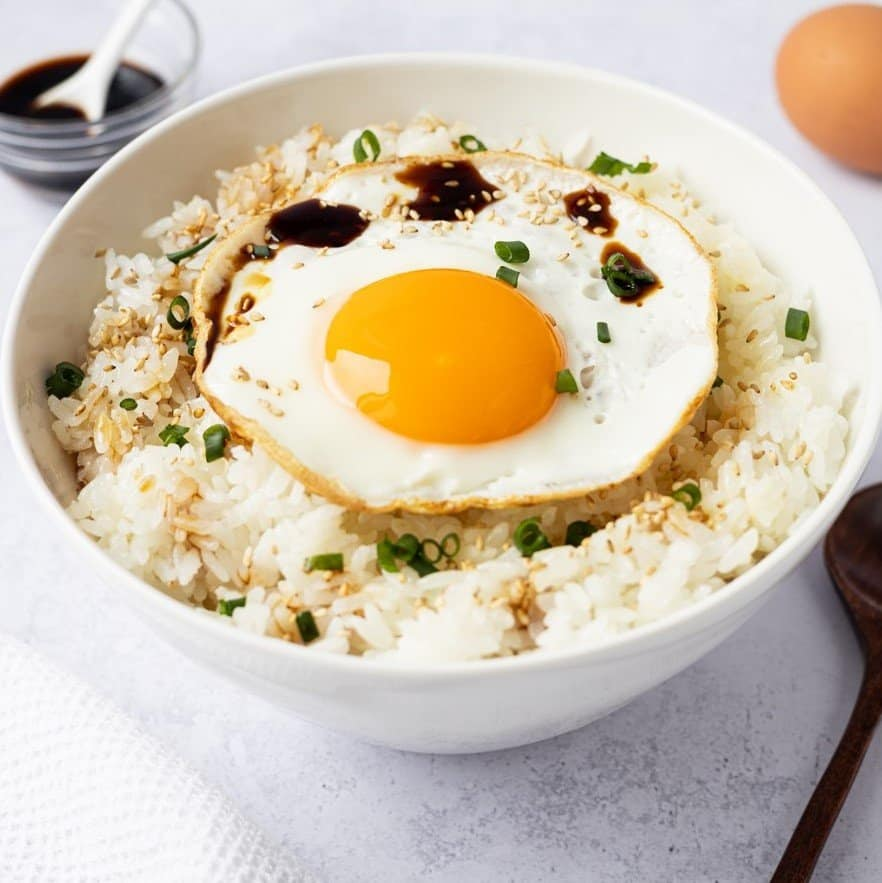
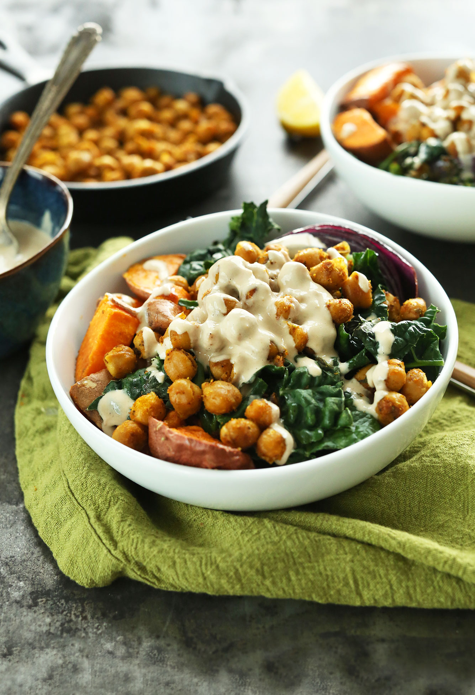

Meat/Fish
Turkey and Feta Wrap
Ingredients
- 2 tsp Dijon mustard
- 2 small tortilla wraps
- 1 cup baby spinach leaves
- 150g cooked turkey shredded
- 50g feta crumbled
Macros
- Energy---634cals
- Protein---41g
- Fat---33g
- Carbohydrates---42g
- Sat.Fat---13g
- Sugar---2g
- Fibre---5.4g
Cooking Instructions
- Spread mustard over wraps
- Top with turkey, feta and spinach
- Roll up, tucking ends in and wrap in foil until ready to eat
Vegetarian
Egg & Rice Lunch Bowl
Ingredients
- 1 tsp sesame seeds
- 120g baby spinach leaves
- 1/2 tsp sesame oil
- 2 tsp soy sauce
- 3 large eggs
- 160g pre cooked rice
- 1 small chilli
- 1 medium carrot cut into thin batons
- 2 tsp apple cider vinegar
- 1/2 tsp honey
Macros
- Energy---599cals
- Protein---31g
- Fat---25g
- Carbohydrates---56g
- Sat.Fat---5g
- Sugar---8g
- Fibre---9g
Cooking Instructions
- To make pickled carrot combine carrot, vinegar and honey in a bowl and season with salt
- Wilt spinach in a hot pan for 60 seconds and add sesame seeds, sesame oil and half the soy sauce
- Set pickle and spinach to one side and add eggs to the unwashed pan
- Cook the eggs with a bit of oil and the rest of the soy sauce to your liking
- Add rice, spinach and pickle to a bowl and top with eggs
Vegan
Chickpea Veggie Bowl
Ingredients
- 1 carrot sliced
- 200g cauliflower cut into florets
- olive oil spray
- 1/4 tsp ground coriander
- 1/2 tin chickpeas drained and rinsed
- 1/4 tsp ground cumin
- 225g pre-cooked quinoa
- 30g whole almonds roughly chopped
- 3 sprigs coriander roughly chopped
Macros
- Energy---615cals
- Protein---28g
- Fat---24g
- Carbohydrates---61g
- Sat.Fat---2g
- Sugar---12g
- Fibre---21g
Cooking Instructions
- Preheat oven to 210°C/fan 200°C/gas 7 and line a baking tray with baking paper.
- Place carrots and cauliflower on a baking tray, spray with oil and toss with salt, pepper and ground coriander
- Toss chickpeas with cumin, salt and pepper and add to tray
- Roast vegetables for 25 mins
- Divide veg, chickpeas and quinoa between bowls and top with coriander and almonds